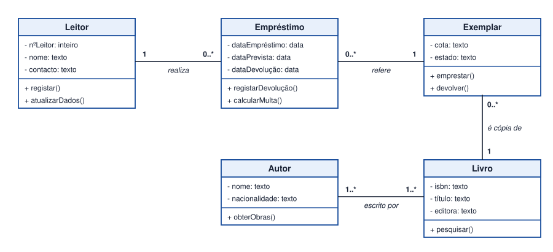
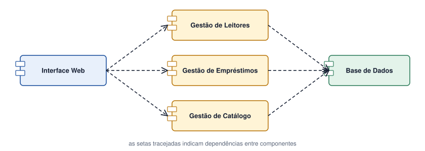

Tema 24 · Implementação e projeto final
Representação da implementação
Diagramas de classes, de colaboração e de componentes
Depois de compreender o que o sistema deve fazer, é preciso pensar em como será construído. Os diagramas de classes, de colaboração e de componentes ajudam a preparar a implementação.
Diagrama de classes
Mostra as classes do sistema, os seus atributos e métodos e as associações. Cada classe tem três compartimentos: nome, atributos e métodos.
| Elemento | Notação |
|---|---|
| Visibilidade | + público, − privado, # protegido |
| Atributo | − nome: tipo |
| Método | + registar() |
| Associação | Linha com nome e multiplicidade (1, 0..*, 1..*) |
| Agregação / composição | Losango vazio / preenchido (relação «todo-parte») |
| Generalização | Seta com triângulo vazio (herança) |
As classes surgem muitas vezes das entidades do DER, às quais se acrescentam os métodos (comportamento). A multiplicidade corresponde à cardinalidade.
Diagrama de colaboração (ou de comunicação)
Mostra os objetos envolvidos numa funcionalidade, as ligações entre eles e as mensagens numeradas que trocam (1: pesquisar(), 2: obterExemplar()…). Tem a mesma informação do diagrama de sequência, mas com ênfase nas ligações entre objetos e não no tempo.
Diagrama de componentes
Mostra os módulos de software (componentes), as interfaces que oferecem e as dependências entre eles: interface web, módulos de negócio, base de dados.
Atividade
Criar o diagrama de classes e o diagrama de componentes do projeto
- Crie o diagrama de classes do projeto da biblioteca, com as classes Leitor, Empréstimo, Exemplar, Livro e Autor, incluindo atributos, métodos e multiplicidades.
- Crie o diagrama de componentes com a interface web, três módulos de gestão (leitores, empréstimos e catálogo) e a base de dados.
Ver proposta de resolução


As multiplicidades do diagrama de classes decorrem das cardinalidades do DER: Leitor 1 — 0..* Empréstimo; Exemplar 1 — 0..* Empréstimo; Livro 1 — 0..* Exemplar; Livro 1..* — 1..* Autor.
Em resumo
- O diagrama de classes mostra classes, atributos, métodos e associações.
- O diagrama de colaboração mostra objetos e mensagens numeradas.
- O diagrama de componentes mostra módulos e dependências.
- As classes derivam das entidades do DER, acrescentando comportamento.